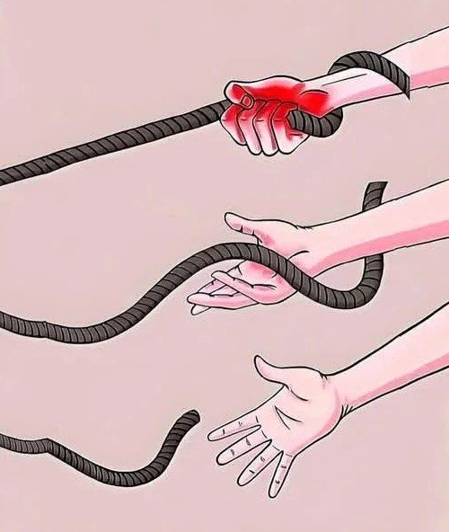

Groei gaat niet in een rechte lijn, en de weg naar succes lijkt chaotisch. Tot je beseft dat elke omweg je iets waardevols leerde, en iedere kronkel in je pad een teken is dat je beweegt en leert.Soms lijkt het alsof je vastzit, tot je uitzoomt en ziet hoeveel je al hebt bereikt. Een slechte dag is niets in vergelijking tot het grote geheel.Zelfs het kleinste begin kan uitgroeien tot iets groots. De kracht zit hem niet in wat het nu is, maar in wat het kan worden.Waarover je piekert, is vaak veel groter in je hoofd dan in het echt. Laat je gedachten de werkelijkheid niet groter maken dan het is. De meeste angsten zijn illusies.Je hoeft de puzzel niet alleen te maken. Iedereen draagt iets bij, en samen ontstaat iets groots. Jij voegt jouw stukje toe, en het geheel groeit.

Bloemen